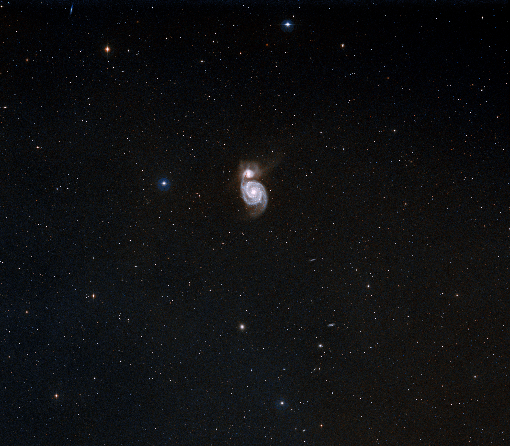

NORTH / LATE SPRING / 23 MILLION LIGHT YEARS
M51The Whirlpool
Galaxy
A field guide to a spiral structure under tension.
A spiral
in conversation.
M51 is not one island of light. Its companion galaxy pulls at the larger spiral, and the image keeps that exchange visible across distance.
Start wide enough to keep the surrounding field. Then move inward. The closer view does not reveal a new object; it changes the pace at which the same object can be read.
THE SAME IMAGE / THREE APPROACHES
Change your distance.
The image is an instrument. Choose where to stand before you decide what you see.
A SMALLER DISTANCE
Look for the
relationship.
The companion is easy to miss when the frame becomes spectacle. Hold the image long enough to see that the irregularity is the subject.
Best read as a pair. Let the eye travel from the bright core to the smaller companion, then back along the dust lane.
Keep the
source visible.
This guide uses an original-resolution NASA/ESA Hubble image. The view is authored; the material is not.
Open image record ESA Hubble contextHERITAGE